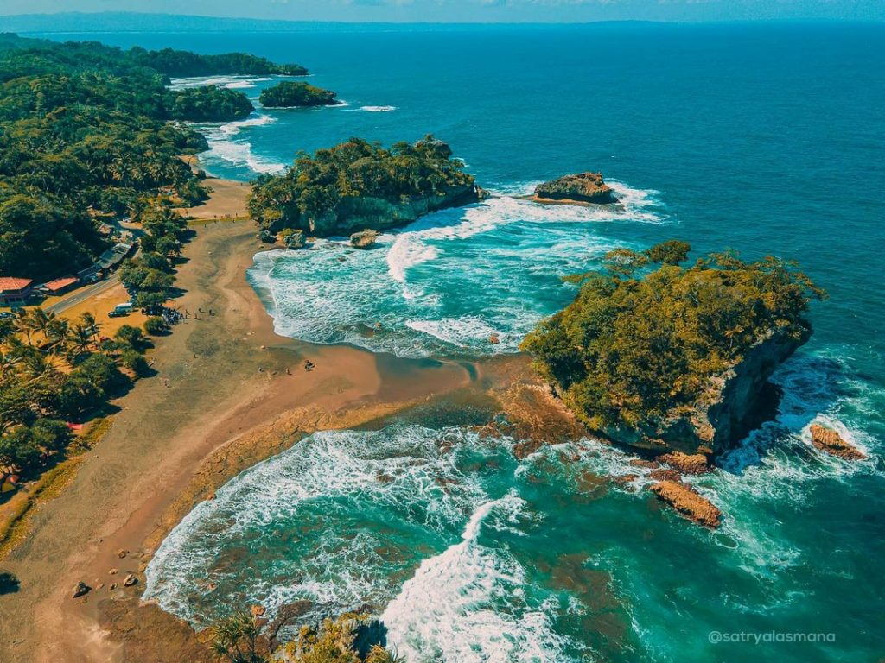
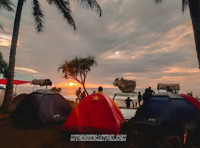

Pantai Madasari Surga Khatulistiwa Di Pangandaran
Pantai Madasari Memang Masih Jarang Terdengar Sebagai Objek Wisata Di Pangandaran. Pantai Di Pangandaran Ini Mempunyai Sejuta Pesona Yang Masih Belum Banyak Diketahui Oleh Para Wisatawan Sehingga Tempat Ini Masih Jarang Dikunjungi Oleh Pelancong. Sekali Anda Mengunjungi Tempat Ini Anda Pasti Ingin Kembali Suatu Saat Nanti Ke Tempat Ini Karena Keindahan Alamnya Yang Sangat Menawan.
Pantai Madasari merupakan pantai yang masih asri, suasananya sepi, sangat cocok bagi mereka yang ingin mencari ketenangan dalam balutan suasana alam pantai.
Pantai dengan air laut berwarna biru ini terletak di Desa Masawah, Kecamatan Cimerak, Kabupaten Pangandaran, Provinsi Jawa Barat. Meski terbilang masih sepi, tak membuat pemerintah acuh terhadap fasilitas di Pantai Madasari, sejumlah toilet umum dan area parkir sudah tersedia di pantai tersebut. Pantai Madasari buka selama 24 jam setiap harinya. Waktu terbaik menikmati Pantai Madasari adalah ketika matahari terbenam yabg dilanjutkan dengan kegiatan api unggun di tepi Pantai Madasari. Sebuah perpaduan yang sempurna!
Pantai Madasari yang eksotis ini masih sepi dari pengunjung dan ada enam batu karang yang menambah keindahan pantai Mandasari ini yaitu Batu Gedogan, Batu Sebrotan, Batu Leuit, Legok Gandu, Cariuk, dan Pandan Nyampai. Semua batu tersebut terbentuk indah dan unik karena proses alam.
Di Sepanjang Pantai Masih Banyak Pulau Kecil Yang Dapat Dikunjungi Atau Sekedar Dinikmati Keelokan Dan Keasrian Pemandangannya. Anda Dapat Melihat Keasrian Laut Yang Jernih Dan Banyak Terumbu Karang Beserta Ikan-Ikan Kecil Di Atas Permukaan Pulau. Selain Itu Angin Yang Berhembus Semilir Juga Akan Melengkapi Syahdunnya Liburan. Karena Belum Banyak Pengunjung Yang Mendatangi Pantai Ini, Kawasan Pantai Madasari Cenderung Masih Alami Dan Bersih Dari Sampah Makanan Atau Minuman. Dengan Keadaan Yang Seperti Ini Akan Menambah Kenyamanan Tersendiri Bagi Para Wisatawan Baik Lokal Maupun Mancanegara. Dengan Lingkungan Yang Bersih, Kawasan Pantai Juga Lebih Enak Dipandang.
Saat berwisata ke Pantai Madasari pastikan akan menjumpai pepohonan ketapang yang berbaris di sepanjang pantai. Keberadanya yang agak sulit dijangkau pelancong, lantaran terletak di Kecamatan Cimerak yang terbilang pelosok dan jika dari Pantai Pengandaran bisa memakan jarak sekitar 50 km.
Rute Menuju Lokasi ke Pantai Madasari
Pantai Madasari terletak di Desa Masawah Kecamatan Cimerak, Kabupaten Pangandaran. Untuk sampai ke Pantai, dari pusat kota Pangandaran menuju ke arah Cimerak, melewati objek wisata Pantai Batu Hiu. Kemudian dari Cimerak lurus ke arah Legokjawa, belok kiri ke Bulakbenda dan sampai di Madasari.
Kondisi jalannya juga sudah bagus hingga ke area parkiran Pantai Madasari. Akses jalan menuju Pantai Madasari akan melewati sepanjang pesisir pantai.
Jarak Pantai Madasari dari pusat Kabupaten Pangandaran sekitar 20 kilometer, dengan rata-rata waktu tempuh sekitar 30 menit perjalanan.
Harga Tiket Masuk di Pantai Madasari
Pantai Madasari buka setiap hari, dari hari Senin - hari Minggu. Buka Selama 24 Jam. Tiket masuk Pantai Madasari berdasarkan jenis kendaraan para pengunjung, yaitu:
- Tiket Pantai Madasari Rp. 2.500 untuk pejalan kaki.
- Tiket Pantai Madasari Rp. 7.000 untuk kendaraan motor.
- Tiket Pantai Madasari Rp. 25.000 untuk kendaraan mobil kecil.
- Tiket Pantai Madasari Rp. 110.000 untuk kendaraan bus kecil.
- Tiket Pantai Madasari Rp. 160.000 untuk bus besar.
Indahnya Berkemah Sambil Menikmati Panorama Sunset dan gelombang air laut

Daya tarik dari Pantai Madasari sendiri merupakan adanya aktivitas camping di pantai tersebut. Aktivitas camping menjadi primadona di Pantai Madasari karena pengunjung dapat merasakan suasana camping yang tenang dan nyaman serta jauh dari riuh nya perkotaan. Dengan adanya aktivitas camping ini, menjadikan minimnya penginapan di kawasan Pantai Madasari.
Camping ground di pantai madasari bisa menjadi solusi bagi para traveller untuk menghabiskan liburan anda saat berkunjung ke Pangandaran dan sekitarnya, paket camping yang kami tawarkan merupakan paket yang sangat relatif terjangkau. Anda bisa menikmati semua panorama alam di pantai madasari ini dari mulai hunting sunrise hingga hunting sunset yang begitu mempesona.
Harga Paket Camping di Pantai Madasari
Salah satu tempat camping terbaik di Pangandaran dengan view laut adalah Pantai Madasari. Pantai Madasari sangat cocok untuk tempat camping bersama teman, keluarga, maupun acara komunitas. Suasana di pantai ini cukup tenang, dengan suara debur ombak yang sangat khas.
Kamu bisa bersantai di tenda sembari menikmati birunya laut dan langit yang cerah. Ada beberapa karang besar yang eksotis di sekitar pantai. Tidak perlu khawatir dengan terik matahari saat siang. Di Pantai Madasari banyak pepohonan yang nyaman untuk berteduh.
Tersedia beberapa spot untuk mendirikan tenda. Ada yang alasnya langsung di atas pasir dan menghadap ke Karang Segeuh. Spot lain berada di area dengan alas rerumputan dan persis di bawah teduhnya pepohonan. Di spot khusus, mobil bahkan bisa masuk sampai ke area camping.
Harga paket camping di Pantai Madasari berkisar antara Rp100.000,00 - Rp500.000,00 per pax. Ada juga paket camping all in seharga Rp125.000,00/orang (minimal 4 orang). Harga tersebut sudah termasuk:
- Htm
- Tenda dome + tikar
- Sewa lahan + parkir
- Api unggun + kopi/teh
- Dokumentasi foto
- Guide ke spot-spot di sekitar pantai
- 1x makan nasi liwet ikan bakar
Harga paket camping di Pantai Madasari bisa berubah sewaktu-waktu. Pastikan kamu konfirmasi terlebih dahulu ke pengelola.
Saat camping di Pantai Madasari, jangan lupa kulineran juga, ya. Kuliner paling favorit di pantai ini adalah olahan lobsternya. Kalau cuaca sedang bagus, kamu bisa mencicipi lobster yang baru dibawa oleh para nelayan dari laut.